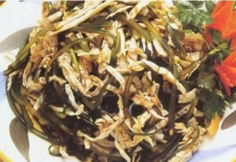
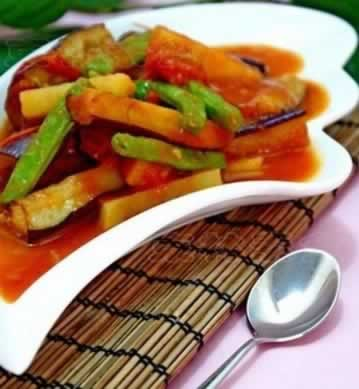
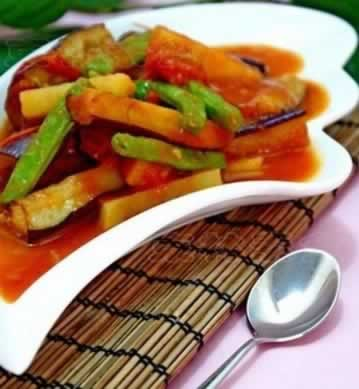

聪明地吃，巧防辐射
许多准妈妈都会在孕期穿上防辐射服，它在一定程度上能够防御辐射的危害。电磁辐射是一种能源污染，不仅会出现在手机上，家用微波炉、电脑、电视以及电褥子等都会放出电磁波。电磁辐射对人体的危害与其导致机体过氧化有关。所以防范电磁辐射，除了避免和电磁波的“亲密接触”外，在饮食上也可选择那些抗氧化的食物。微量元素硒具有抗氧化的作用，维生素A、C、E也是很好的抗氧化组合，那么准妈妈们是否知道，菜市场里哪些食物都有抗氧化的作用么？下面为您介绍5种常见的抗辐射食物。1、番茄：番茄红素是迄今为止所发现的抗氧化能力最强的类胡萝卜素，以番茄中的含量最高，具有极强的清除自由基的能力，有抗辐射、提高免疫力、延缓衰老等功效，有植物黄金之称。
2、胡萝卜：胡萝卜中含有丰富的天然胡萝卜素。天然胡萝卜素是一种强有力的抗氧化剂，能有效保护人体细胞免受损害。
3、黑芝麻：黑芝麻含有丰富的微量元素硒，可以通过阻断身体过氧化反应而起到抗辐射作用。此外，芝麻还富含具有抗氧化作用的维生素E，双管齐下，抗辐射功效更强。
4、绿豆：绿豆能帮助排泄体内毒物、加速新陈代谢，可有效抵抗各种形式的污染。
5、海带：海带所含有的胶原物质有一种黏附作用，它可以把体内的辐射性物质黏附出来排出体外，所以，海带可谓是放射性物质的克星。
本周推荐尝试食谱1：
橘味海带丝
推荐理由：橘味海带丝清凉可口，含有丰富的营养素，尤其碘的含量十分丰富，适合孕妇抗辐射与补碘。
食谱原料：
干海带150克，白菜150克，干橘皮50克，白糖、味精、醋、酱油、香油、香菜段各适量。
制作方法：
1、干海带放锅内蒸25分钟左右，捞出，放热水中浸泡30分钟，捞出，切成细丝。
2、把白菜洗净，切成细丝。
3、将干橘皮浸软洗净，切成丝末。
4、将海带丝、白菜丝和橘皮末放入大碗内，加酱油、醋、白糖、味精和香油，撒上香菜段，拌匀即可。
本周推荐尝试食谱2：
番茄土豆豆角炖茄子

推荐理由：本菜品简单易做，营养全面丰富，酸甜口味，还可增强食欲。\
食谱原料：西红柿半个，土豆1个，茄子1个，四季豆、植物油、食盐、水各适量。
制作方法：
番茄土豆豆角炖茄子

推荐理由：本菜品简单易做，营养全面丰富，酸甜口味，还可增强食欲。\
食谱原料：西红柿半个，土豆1个，茄子1个，四季豆、植物油、食盐、水各适量。
制作方法：
1、番茄洗干净,切成块备用。
2、茄子洗净切段备用。
3、四季豆洗净,掐头去尾,用手掐成二段备用。
4、土豆洗干净刨皮,改刀成条状备用。
5、净锅内加入精制油,大火加热至四成热,倒入土豆、四季豆大火滑油, 一会儿捞出,沥干油分。油温升高至六成热,放入茄子滑油,出锅沥干油分。
6、锅内底油,放姜末煸香,倒入番茄煸炒,中火爆炒, 加清水180克倒入滑油原料土豆、茄子、翻炒均匀, 略微炖一会儿, 放入四季豆,调入少许盐,蘑菇精(代替味精),拌匀起锅,不勾芡盛入盘内稍摆盘即可。